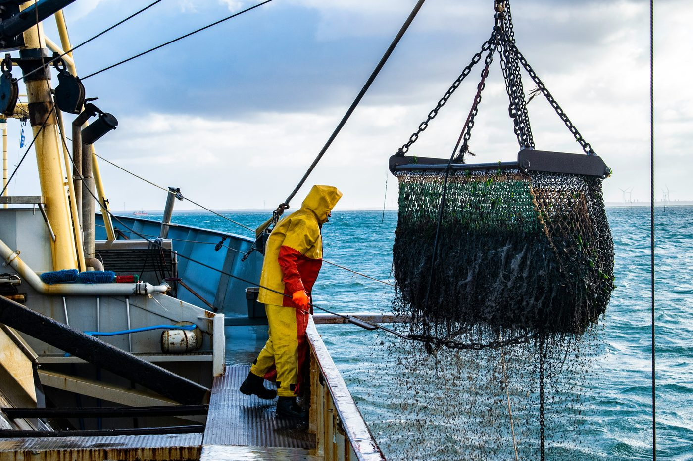

Filter by lens (social, technological, economic, environmental or political) to see what's moving in each.
Gaining traction across institutions, aiming to embed an understanding of the ocean's influence on humans and vice versa.
A movement where individuals participate in ocean conservation, advocate for marine policies, and adopt ocean-friendly lifestyles.
Permanent dwellings at sea, using international waters for regulatory experimentation and rapid new forms of governance.
Rising sea levels and extreme weather are displacing millions, raising early signs of significant concern across coastal communities.
Growing popularity of ocean-inspired therapy, leveraging the biophilic benefits of marine environments for physiological health.
Seafood is becoming a scarcer and more valued resource, demanding transparency in fishing practices and traceability from sea to table.
A surge in advocacy and initiatives to reduce ocean plastic pollution, spurring innovation in cleanup and alternative materials.
Involves the public in ocean monitoring and data collection, contributing meaningfully to research and long-term analysis.
Increasing need to manage over-consumption, reduce fishing of endangered species, and support a more sustainable diet.
Autonomous underwater vehicles and drones are increasingly deployed to collect data and perform tasks that target vessels can't reach.
Internet of Things is connecting devices, monitoring, tracking and sharing ocean data through marine environments in near real time.
Improving fisheries management by predicting fish population dynamics, optimizing sustainable catch limits, and combating illegal fishing.
Innovations in wave, tidal and ocean-thermal energy hold potential to expand the renewable mix at commercial scale.
Offshore wind has already benefited from falling prices, increasing scale and capacity, and floating substructures.
Ocean-collected data is processed at discrete levels of scale and distribution (from local to international), supporting sustainable use.
Emergence of sustainable, biodegradable fishing gear and tools to reduce ghost fishing, waste, nets and traps.
Real-time digital replicas of ocean systems, combining satellite, sensor and model data to simulate change before it happens.
Monitoring devices, 3D printing and bioacoustic sound are being used to support marine ecosystems using natural materials, e.g. reef restoration.
The blue economy is seeing significant growth, utilizing ocean resources for economic development, jobs and essential services.
Increased venture capital and government funding for ocean-tech startups, focusing on innovation in marine industries and technologies.
Development of ocean carbon-credit markets to incentivize protection of blue-carbon environments and coastal restoration projects.
New insurance products are emerging to cover climate-related risks in maritime communities and industries, promoting resilience and adaptation.
A major trend for local businesses, increasingly helpful in conservation efforts and sustainable tourism practices.
Collaborative platforms, marketplaces and applications facilitate the exchange of goods and services, allowing multiple parties to share value.
Alternate fuels such as hydrogen and ammonia are gaining momentum, with pilots targeting up to 90% less pollution per voyage.
Tools for marine spatial planning support sustainable development, balancing economic activity with ecosystem protection.
A framework proposing deliberately smaller, steady-state economic activity in ocean-linked industries, prioritizing ecological limits over throughput growth.
Comprehensive mapping of marine biodiversity aids conservation planning, identifying critical habitats and the impacts of human activity.
Innovations and research into ocean carbon capture and natural absorption capacity, aimed at mitigating climate change.
Without drastic action, plastic in the ocean could outweigh fish by 2050. Millions of tons enter the ocean every year.
Development of coastal infrastructure designed to withstand climate change: sea level rise, storms and erosion.
Restoration projects for mangroves, coral reefs and wetlands are being prioritized for sequestration, habitat and resilience.
Recirculating systems, alternative feeds and climate-smart models are driving sustainable growth in sea-based farming.
Intensified research into ocean-ecosystem services and their effects on marine life is supporting new conservation strategies.
Global coverage of Marine Protected Areas sits at roughly 8%, split between national jurisdiction and areas beyond it.
Reforms in global ocean governance aim to improve international cooperation and equitable use of ocean resources.
Deployment of modern surveillance technologies for enforcing maritime law: combating illegal fishing, piracy and ensuring safety.
The delineation of marine space amid natural-resource extraction, exclusive economic zones (EEZs), and shared resources.
Rising geopolitical instability and tension over maritime boundaries, trade routes and natural resources such as oil and gas.
Expansion of international treaties aimed at reducing marine pollution: plastics, run-off chemicals and oil spills among others.
Sovereign debt restructured in exchange for binding conservation commitments, a new wave of "third-generation" swaps.
Growing recognition and demand for the rights, voice and participation of indigenous peoples in the conservation of marine areas.
Development of policies that promote the sustainable trade of marine products, alongside responsible-industry conservation efforts.